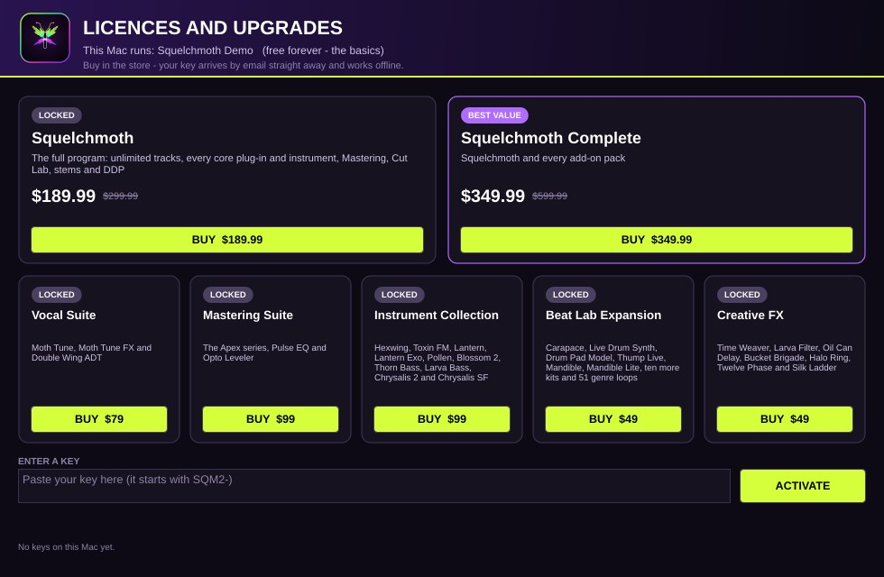
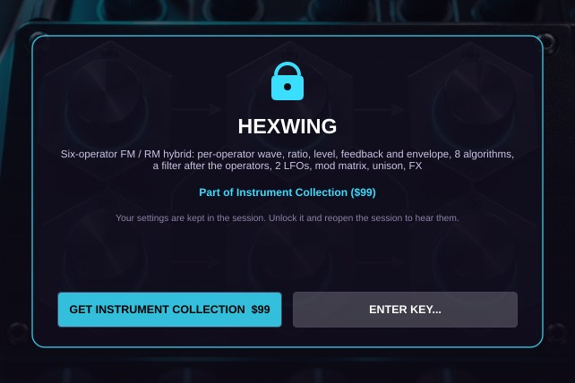

Help, keys and answers.
Most answers are below. Anything else: support@squelchmoth.com — every email gets a personal reply.
Paste it once. Works offline.
- Find the key in your purchase email. It looks like
7K3QM-2XRB9-TNH4V-WZ8PC(older keys start withSQM2-; both work). - Open Squelchmoth, choose Help › Licences and Upgrades.
- Paste the key and press Activate. The product's card turns to Owned.
- If a session already had locked plug-ins, press Reopen session to unlock.
Bought more than one product? Enter each key — they stack. Keys are checked on your computer with a digital signature; nothing is sent anywhere.

Search your inbox for “Squelchmoth” or “Payhip”. Payhip also lets you re-open any past purchase from the link in the receipt. Still stuck? Email us the address you bought with.
Install, paste the same key. Each licence covers two computers, Mac or Windows, used by one person at a time.
On a Mac, right-click the installer and choose Open, then Open again. On Windows, click More info › Run anyway. If macOS still refuses, open System Settings › Privacy & Security and click Open Anyway.
Squelchmoth reopens your session with that plug-in switched off. Hold Shift while launching for Safe Mode. Help › Copy diagnostics gives us everything we need.
The session uses a plug-in from a product you don't own yet. Its settings are kept. Unlock the product and reopen the session to hear it.

If something you bought does not work on your computer, email within 30 days for a full refund. Refund policy
Frequently asked
Is the Demo really free forever?
Yes. No time limit and no watermark. It has the basics — 16 tracks, 28 instruments and effects, five kits — and you can save sessions and bounce your mix. When you need more, enter a key and the same app unlocks; nothing to reinstall.
Is it a subscription?
No. Squelchmoth and every pack are one-time purchases with a perpetual licence. Updates within the same major version are free.
Can I use my own plug-ins?
Yes. Squelchmoth hosts VST3 and Audio Unit plug-ins, scans them safely in a separate process, and sorts them into categories with a search box in every plug-in menu.
How do I get my key?
Checkout is handled by Payhip. Your key and download link arrive by email straight away. Paste the key into Help › Licences and Upgrades — it works offline.
What happens to a session that uses a plug-in I don't own?
It opens normally. The plug-in loads as a Locked panel that keeps every setting and its automation; the panel shows which product unlocks it. Effects pass audio through and instruments stay silent until you unlock and reopen the session — then they come back exactly as they were.
Do add-on packs need the full program?
No. Packs work in every edition, including the free Demo.
How many computers can I use?
Two computers that you own or control, used by one person at a time. Mix and match: one key works on Mac and Windows.
Does it need the internet?
No. Recording, editing, mixing, mastering, exports and key activation all work offline. Only Squelchmoth Chat and the claude.ai / chatgpt.com connections use the internet.
Which computers does it run on?
Macs with macOS 11 Big Sur or newer, Intel or Apple Silicon, with a native build for each; and 64-bit Windows 10 and 11. One key unlocks both.
What is your refund policy?
Try the free Demo first — it runs the same program. If something you bought does not work on your computer, email us within 30 days for a full refund. Refunds cancel the key.
What do I need for Squelchmoth Chat?
An API key for the assistant you pick with the CLAUDE / CHATGPT switch: an Anthropic key (console.anthropic.com) for Claude, or an OpenAI key (platform.openai.com) for ChatGPT. Paste it once in the chat panel; each key is stored only on your computer. Anthropic and OpenAI bill API use to those accounts; a claude.ai or ChatGPT subscription does not include API use.
Is Squelchmoth affiliated with Anthropic or OpenAI?
No. Squelchmoth is an independent product by Jamar Stewart. Claude is made by Anthropic and ChatGPT by OpenAI; Squelchmoth Chat and the claude.ai / chatgpt.com connections use your own accounts with them.